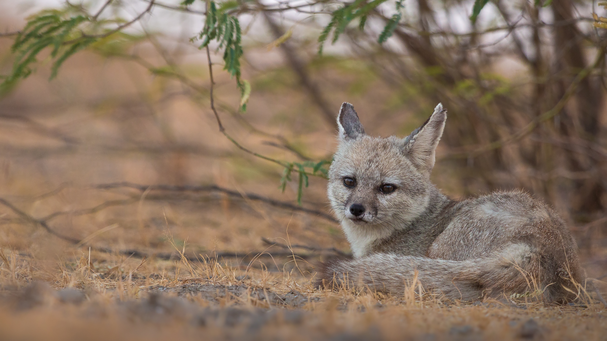
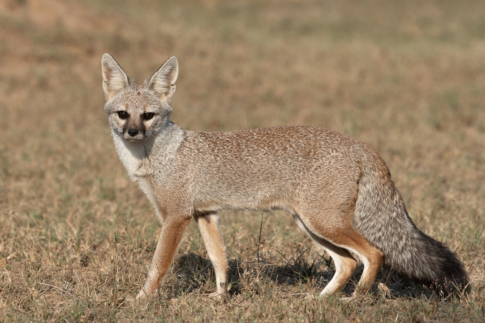

The Bengal fox, also known as the Indian fox, ranges from Bangladesh, to the Himalayan Foothills, and Pakistan.
The Bengal fox eats insects, rodents, reptiles, birds, fruits, and berries.
They are often preyed on by Asiatic wolves and feral dogs. Like most other fox species, they are marked as least concern on the red list.


Photo by unknown from Wikimedia Commons
Photo by Shreeram V from Wikimedia Commons